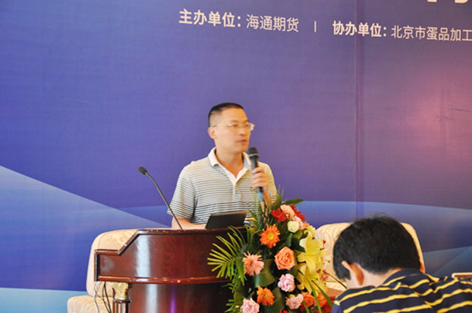

海通期货举办“场外衍生品
如何助力企业供给侧改革”场外衍生品论坛
2016海通期货场外衍生品论坛——“场外衍生品如何助力企业供给侧改革”在湖北武汉洪山宾馆黄鹤厅隆重举行，会议由海通期货主办，北京市蛋品加工销售行业协会协办，大连商品交易所给予特别支持。鸡蛋现货企业、贸易商和投资者等160余位专业人士参加了论坛。
会议邀请了北京市蛋品加工销售行业协会秘书长、畜牧大集网首席分析师王忠强、武汉鑫满林贸易有限公司总经理李满生、海通期货场外市场部负责人苏宜政、海郑投研研究员李骐羽等演讲嘉宾，就中国鸡蛋行业现状、鸡蛋现货企业套期保值等主题展开了热烈探讨。
李骐羽以蛋鸡企业的主要经营风险问题作为切入点，介绍了期货、期权等金融衍生品的具体套保方式，更以具体的实际案例来帮助现场嘉宾思考蛋鸡企业如何实现规避难以预期的产业链后期市场价格变动风险。
王忠强以详细的数据及图示来分析目前几类种鸡、鸡蛋的生产销售情况、影响价格因素及进口贸易状况。再从不同角度分析了我国蛋鸡行业的发展格局，同时分享了他在欧洲参加蛋鸡领域培训时所考察荷兰和德国蛋鸡养殖场的经历。最后具体介绍蛋鸡保险的模式来将金融与产业相结合，为到场嘉宾拓宽蛋鸡企业养殖风险管理的方式。王忠强认为:“目前行业从业的主体还是小户，没有对市场宏观走势的判断能力，而且在农产品的决策中始终存在跟风的问题，因此造成了鸡蛋生产规模的不稳定，导致鸡蛋价格的大幅波动。通过“保险+期货”的方式，能将鸡蛋养殖的价格风险转移出去。”
苏宜政从原料进货、产品销售、库存保值的不同角度，通过阶梯式的案例着重分析了场外期权在鸡蛋企业风险管理上的应用。并详细介绍了场外期权的交易流程，为参会嘉宾呈现了不同的新视角。同时,苏宜政认为：“场外期权不仅可以帮助蛋鸡养殖企业在担心玉米豆粕等原材料价格上时锁定期原材料价格，也可以利用场外期权提前锁定鸡蛋销售价格，同时也能为鸡蛋库存保值提供有益帮助。”
李满生介绍了鸡蛋期限的操作实务。以专业的视角，分享了自己在期限套保时的具体操作经验，为到场嘉宾进行期限套保时提供借鉴。同时，李满生认为，鸡蛋是一个季节性非常强的一个品种，价格波动剧烈，常年涨跌幅度高达50%，同时年度变化周期非常明显，赚两年亏两年是一种常态，当鸡蛋期现价格走势相近、期货市场有足够的流动性时，利用实际交割价与现货的相关系直接交割、利用近现货月期货与现货关系做套保、利用主力合约和现货的关系做集中套保，则可以在套期保值上取得良好效果。
在论坛的交流讨论环节中，由海通期货华中分公司总经理潘洪主持，邀请了演讲嘉宾王忠强、苏宜政及武汉融华兴贸易有限公司总经理邬宏、湖北家和美食品有限公司总经理闫铁山、河北民旺集团牧康源有限公司张殿旺一同参与讨论。就鸡蛋行业如何进行供给侧改革、场外期权如何助力供给侧改革，以及互联网行业与鸡蛋产业如何相结合等话题进行了深度探讨。
通过本次论坛，参会嘉宾对于市场在供给侧改革的背景下，鸡蛋企业如何运作，如何通过金融衍生工具良好地管理企业价格风险有了更深层次的思考，收益颇丰。会议现场反响热烈，会后保持密切沟通。
